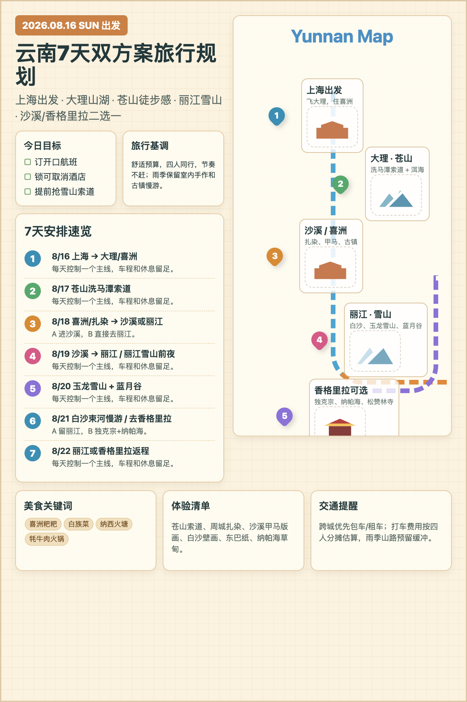

2026.08.16 - 08.22
上海出发｜4人｜舒适预算
手账规划图 · 双方案 · 费用估算
云南7天双方案
从上海出发，基础路线为上海-大理-苍山-丽江；A 途径沙溪，B 收尾香格里拉。

8/16
上海 → 大理
飞大理，住喜洲/大理古城
8/17
大理 → 苍山
洗马潭索道 + 洱海休整
8/18
喜洲 → 分线
A 去沙溪，B 去丽江
8/19-8/22
丽江收尾
A 留丽江；B 后接香格里拉
途径沙溪
收尾香格里拉
路线取舍
每日行程
车程核验
高德数据 + 既有核验
预约与费用说明
出发前检查
↑